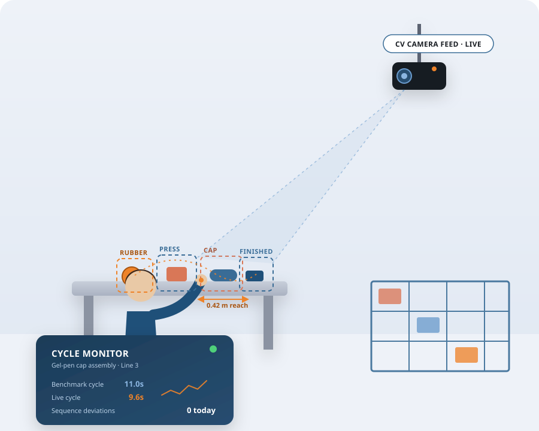
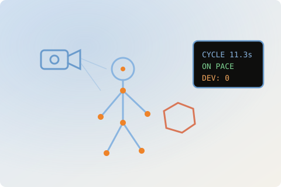
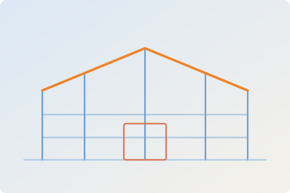
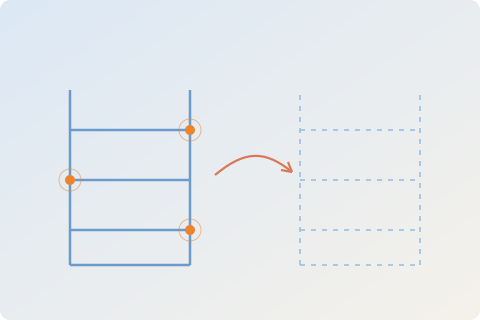
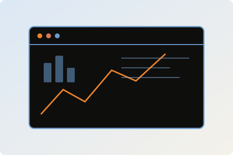

››› Kaizen + Radical Change
Relentless Optimization.
Kairad puts computer vision on your production floor — capturing cycle-time data and flagging deviations from standard work in real time, with no wearables and no clipboard time studies. The same engineering discipline extends to our second practice: end-to-end warehouse automation, from building design to WMS.

››› What We Do
Two practices, one operating philosophy.
Industrial Engineering is our lead offering — a computer-vision work-measurement tool for MSME production floors across manufacturing, medical, hospitality, and supply chain. It's paired with Warehouse Consulting: five connected service lines that take a facility from design through daily operation.

Industrial Engineering Consulting
Computer-vision work measurement that tracks cycle time and flags standard-work deviations on the production floor in real time — see it live on a real production line.

Pre-Engineered Buildings
Design, fabrication, and erection through our vetted PEB partner network — clear spans up to 93 m, engineered for automation from day one.

Digital Twin & Automation
IoT sensing and 2D-to-8D digital-twin simulation that turns static inventory into a live, continuously optimized data stream.

Warehouse Management System
A web + mobile WMS customised module-by-module to your operation, from inbound gate entry to omnichannel dispatch.
Also part of our Warehouse Consulting practice: Structural & Rack Audits and PV-Plate BLE Tracking.
››› Why Kairad
Built at the intersection of Kaizen and radical change
Measure What's Real
Vision-based measurement replaces manual time studies — continuous, objective data free of the Hawthorne effect.
Design-Stage Thinking
We engineer automation and racking requirements into the building itself, not as a retrofit years later.
Continuous Improvement
Kaizen discipline applied to every workflow — incremental gains that compound across a facility's lifecycle.
One Accountable Partner
Structure, sensors, software, and safety compliance coordinated through a single point of responsibility.
››› Warehouse Delivery Model
From design to daily operation
Our five warehouse service lines map to a single delivery journey — engage at any stage, or run the full sequence end to end.
Design & Build
Pre-engineered buildings specified for automation and racking from day one.
Simulate & Optimize
Digital-twin and IoT layers stress-test layouts before go-live.
Audit & Secure
Structural and rack audits keep the facility compliant and safe, continuously.
Track & Trace
BLE tracking gives real-time visibility on every pallet and bin.
Manage & Distribute
A WMS tuned to the operation runs inbound through omnichannel dispatch.
Ready to engineer a more efficient operation?
Tell us where you are today — a production line that needs real-time visibility, a greenfield warehouse design, or an existing facility — and we'll map the right starting point.